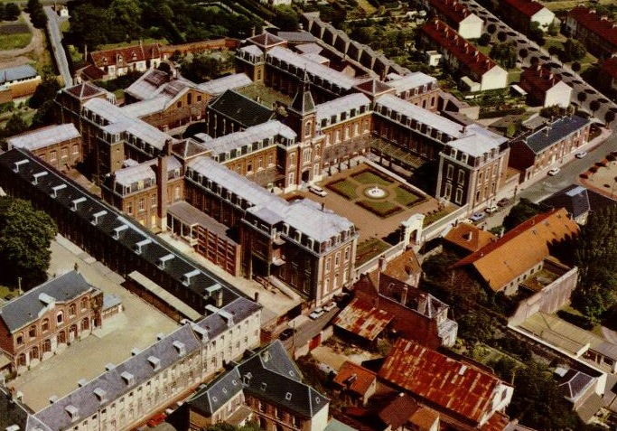
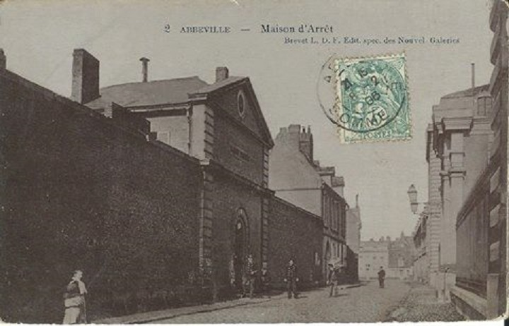
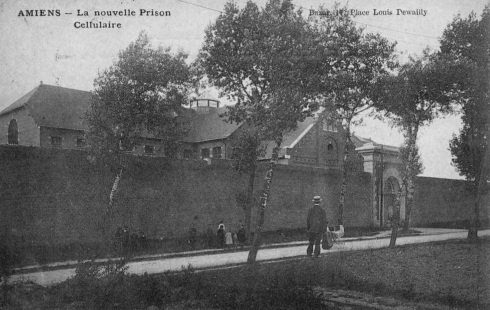
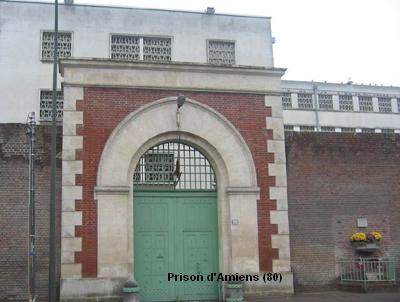
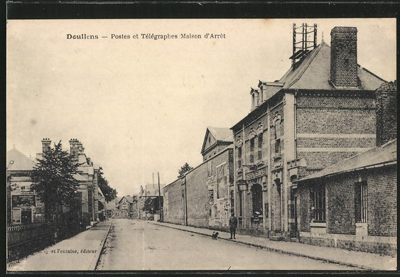
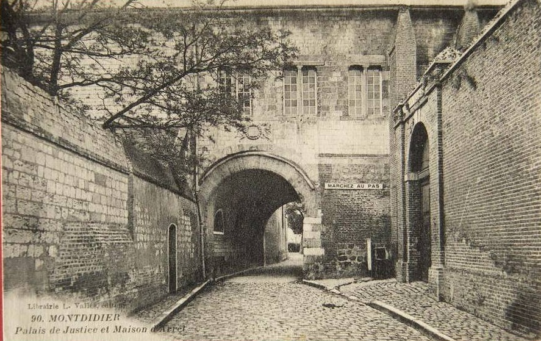
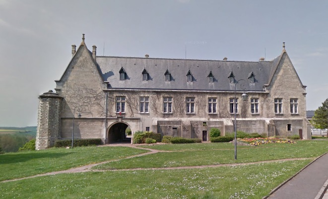

| Département | Images | Ville | Nom | Adresse | Période | Capacité | Histoire du lieu | Nombre d'exécutions |
| Somme (80) |   |
Abbeville | Maison d'arrêt et de correction | Rue des Boulets (8, rue Dumont) | -1926 | Ancien Carmel, fondé en 1606. Fermé sous la Révolution - les religieuses ne trouvant refuge qu'en 1818 dans l'ancienne abbaye des frères capucins -, le bâtiment, démoli en partie, accueille au XIXe siècle le tribunal, la prison et la gendarmerie locale. Les bombardements de 1940 achèveront de détruire l'ancien couvent. A sa place, on trouve le Logement Foyer. | Aucune exécution. | |
| Somme (80) |   |
Amiens | Prison cellulaire d'Albert | 445, route d'Albert / 85, avenue de la Défense-Passive | En service depuis 1904. | 289 places (1962) 307 places (2015) |
En forme en croix, la maison d'arrêt d'Amiens a été cédée par le département à l'Etat le 13 mars 1946. Partiellement détruite lors du bombardement du 18 février 1944 (opération Jericho), elle a été rénovée et surélevée par adjonction de deux étages de 1965 à 1967. | Cinq exécutions en 1929, 1942, 1952, 1957 et 1969 |
| Somme (80) |  |
Doullens | Maison d'arrêt | 1, avenue du Maréchal-Foch | -1926 | Voisine du bureau de postes et de télégraphes (le bureau ancien a été détruit, mais la nouvelle Poste construit à son emplacement). Démolie pour faire place à un immeuble d'habitation. | Aucune exécution | |
| Somme (80) |   |
Montdidier | Maison d'arrêt et de correction | Rue Saint-Pierre | 1840-1926 | L'histoire de la prison de Montdidier doit d'abord commencer par celle du palais de justice auquel elle fut accolée, et qu'on connaît sous le nom de Prieuré. Ancien château comtal, adopté comme résidence royale par Philippe Auguste, le lieu devient tribunal au XVIe siècle. Baptisé Salle du Roy, puis Palais de justice à la fin de la Révolution, le tribunal est presque entièrement rasé lors des bombardements de la Grande Guerre, tout comme la prison qui, depuis 1840, se trouvait sur son flanc sud-est. Le bâtiment est reconstruit en 1930 dans un style un peu différent de l'original, mais rappelant quand même l'architecture gothique de ses débuts. La maison d'arrêt, elle, se voit rasée pour laisser place à un espace vert. Désaffecté en 1961 - les services juridiques étant transportés dans de nouveaux locaux, place de la République -, l'endroit reste inoccupé pendant quatre ans, jusqu'à ce que le centre des impôts l'investisse - jusqu'à nos jours. Voici ce que disait un auteur de la prison au XIXe siècle. "La prison contiguë au palais de justice a été construite en 1839-1840, sur les plans de M. Cheussey, architecte du département ; elle occupe une partie des anciens fossés de la Salle du Roi. Le bâtiment, tout de brique ; est élevé d'un étage ; il a la forme d'un parallélogramme traversé dans sa longueur par un large corridor, sur lequel donnent les cellules, au nombre de vingt-quatre ; à l'extrémité on a disposé un autel où un vicaire de Saint-Pierre dit la messe le dimanche ; les détenus y assistent sans sortir de leurs cellules, qui sont propres, bien éclairées, et chauffées l'hiver par un calorifère. II y a trois cours destinées à la promenade des prisonniers. La prison ne remplit pas le but qu'on se proposait ; sa construction a été manquée, et, malgré la surveillance dont ils sont l'objet, les détenus trouvent moyen de communiquer entre eux. Ils jouissent des avantages du système cellulaire, sans en éprouver les rigueurs ; aussi la maison d'arrêt de Montdidier est-elle, pour certains individus, un séjour recherché." | Aucune exécution | |
| Somme (80) | Péronne | Maison d'arrêt et de correction | 75, rue de Saint-Fursy ? | -1918 | Détruite durant un bombardement. | Aucune exécution |
{kind=link}
{kind=link}
{kind=link}
{kind=link}
{kind=link}
{kind=link}
{kind=link}